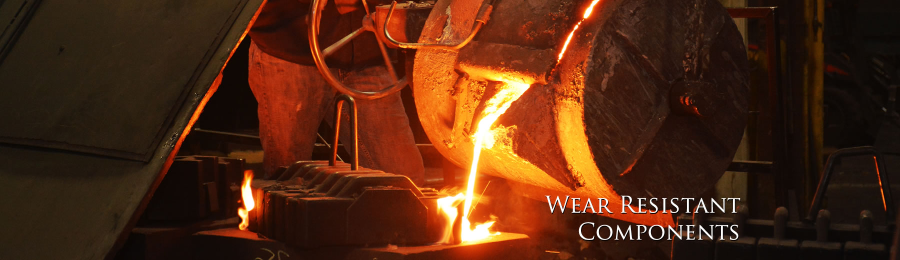

Permanent Mold Casting
The Process
Ever made lead soldiers? If so you have made a permanent mold casting. Permanent mold casting involves pouring metal into permanent molds which are generally made of either cast iron or tool steel. The process is commonly used to cast lighter metals such as aluminum or zinc aluminum alloys. The molds generally open and close like a book. Like sand castings voids are formed through the use of cores. Castings involving the use of expendable cores are often referred to as semi permanent mold castings. In higher volume applications metal cores or slides are built into the mold and can be either manually or hydraulically actuated.
The molds are generally mounted to a tilt pour “device” which controls the flow of metal into the cavity. This is done to control turbulence of the metal and optimize the flow of material into any thinner sections. Permanent mold casting allows for faster chill and therefore better grain structure of the cast material than would be expected with sand casting. This results in better mechanical properties from the same material.
Design Considerations
Basic Tolerance – +/- .015” for the first inch, then +/-.002 for every inch thereafter.
Wall Thickness - Add +/- .020 to features which will cross the parting line of the mold.
Parting Line Shift – 1/64” to 1/32” for all internal and external corners is preferred.
Surface Finish – 150 to 300 RMS
Wall Thickness – .187” to .250” is preferred.
Purchasing/Economic Considerations
Tool Cost – Generally $8000 to $50,000. Cast iron molds are generally less expensive than tool steel molds. Tool steel molds generally provide tighter tolerances and better surface finish.
Tool Life - 100,000 pieces or more.
Transferability – Molds are generally made to use on a particular type of device. The type of device the mold runs on is generally good information to retain should tool transfer become necessary. It is also good to know the details of any core making equipment associated with the permanent mold.
Sand vs. Permanent Mold – This is a common question. Many factors need to be taken into consideration such as volume, tooling budget,finish and secondary operations which will be required on castings produced by the respective processes.
How We Can Help
What becomes of the tooling if there is a slight design change down the road? Does this design lend itself to a full permanent mold or will it require cores? Is this the right process given the anticipated volumes? Let our experience be your guide to permanent mold aluminum castings. Send us your drawings for quick analysis and quotation.